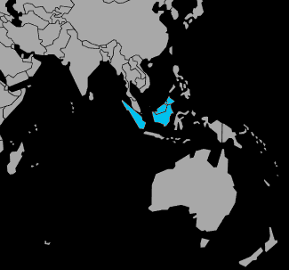

Systématique
- Ordre : Cypriniformes
- Famille : Cyprinidae
- Genre : Trigonostigma
- Espèce : Trigonostigma hengeli
Trigonostigma hengeli est un petit cyprinidé asiatique de pleine eau, proche du rasbora arlequin, apprécié pour sa ligne orangée lumineuse.
Les adultes atteignent environ 3–4 cm et doivent impérativement être maintenus en banc, idéalement 10 individus ou plus, pour exprimer un comportement naturel.
L’espèce vit en banc serré dans la partie médiane et supérieure du bac, où elle nage en synchronisation et se montre très à l’aise parmi une végétation dense.
C’est un poisson paisible mais assez vif, qui se sent plus en sécurité et montre de plus belles couleurs dans un groupe important et un environnement ombragé.
Mode : ovipare ; la ponte a lieu en eau libre ou sous les feuilles, les œufs adhérant généralement à la face inférieure de larges feuilles.
Les adultes peuvent consommer œufs et alevins, d’où l’intérêt d’un bac de ponte dédié, légèrement ombragé, avec des plantes à larges feuilles ou des mops.
Dimorphisme sexuel : femelles un peu plus rondes, mâles plus sveltes et légèrement plus colorés, surtout en période de reproduction.
Espérance de vie : environ 4 à 6 ans en aquarium, avec une eau douce, propre et bien oxygénée.
L’espèce fréquente de petits cours d’eau forestiers et des zones calmes aux eaux douces et légèrement acides, souvent ambrées par les tanins et riches en végétation fine.
Répartition
Origine naturelle :
- Asie du Sud‑Est : principalement les grandes îles de la Sonde (Sumatra, Bornéo).
- Petites rivières lentes, bras morts et zones très plantées de forêts humides.
L’espèce occupe des eaux calmes, peu profondes et bien ombragées, ce qui justifie un éclairage modéré et une végétation abondante en aquarium.
Paramètres de maintenance
Température : 23 à 28 °C.
pH : 6,0 à 7,0, eau douce à légèrement acide.
GH : 2 à 10 °dGH.
Courant : faible à modéré, avec filtration douce sans fort brassage.
Volume conseillé : à partir de 60–80 L, avec un long espace de nage pour un banc d’au moins 10 individus.
Régime alimentaire
Régime : microprédateur omnivore ; accepte paillettes, micro‑granulés et petites proies vivantes ou congelées (daphnies, artémias, microvers).
Une alimentation variée et fractionnée sur la journée favorise une bonne santé, des couleurs intenses et conditionne bien les poissons pour la reproduction.